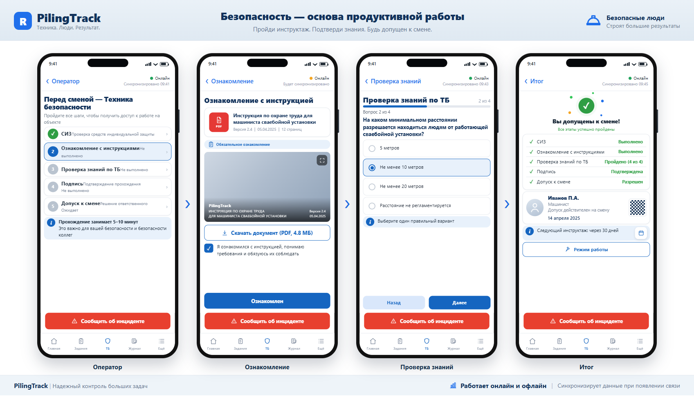
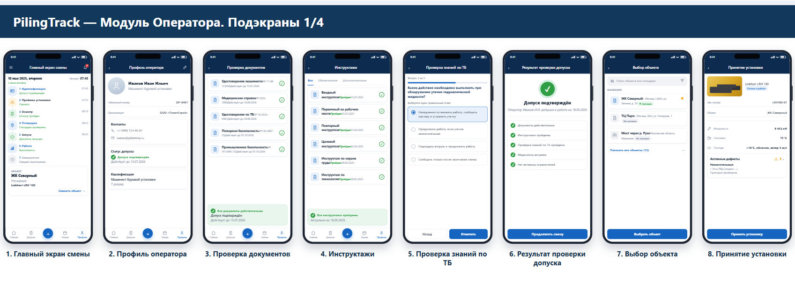
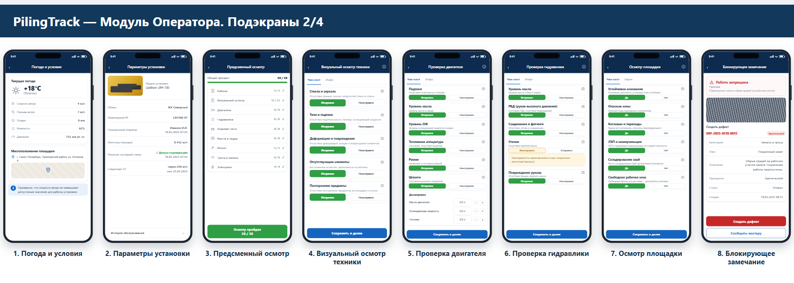
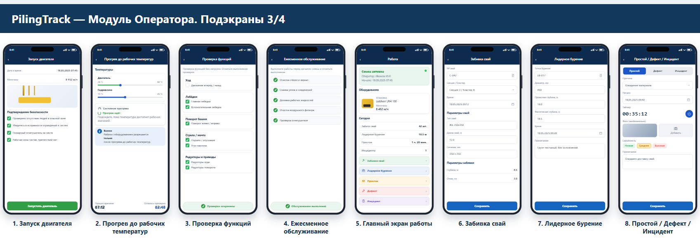
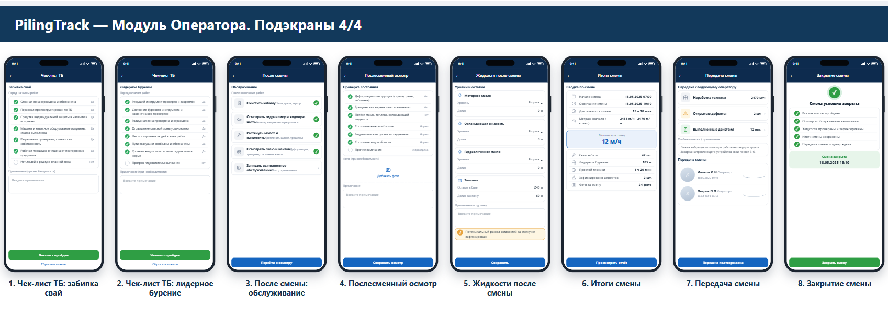

PilingTrack · Модуль оператора
36 экранов в каркасе телефона по 5 баннерам-визуализации: флоу «Перед сменой — ТБ» и «Подэкраны 1/4…4/4». Единая дизайн-система, интерактивный просмотр и презентационный борд, сверенный с оригиналами.
.cluster/operator-viz-match/viz1…viz5_description.mdscreens-*.js с дословным текстом визуализации| Баннер | Экраны | Шт. |
|---|---|---|
| Перед сменой — ТБ | Оператор (список шагов) · Ознакомление · Проверка знаний · Итог | 4 |
| Подэкраны 1/4 | Главный экран смены · Профиль оператора · Проверка документов · Инструктажи · Проверка знаний по ТБ · Результат проверки допуска · Выбор объекта · Принятие установки | 8 |
| Подэкраны 2/4 | Погода и условия · Параметры установки · Предсменный осмотр · Визуальный осмотр техники · Проверка двигателя · Проверка гидравлики · Осмотр площадки · Блокирующее замечание | 8 |
| Подэкраны 3/4 | Запуск двигателя · Прогрев до рабочих температур · Проверка функций · Ежесменное обслуживание · Главный экран работы · Забивка свай · Лидерное бурение · Простой / Дефект / Инцидент | 8 |
| Подэкраны 4/4 | Чек-лист ТБ (забивка) · Чек-лист ТБ (бурение) · После смены: обслуживание · Послесменный осмотр · Жидкости после смены · Итоги смены · Передача смены · Закрытие смены | 8 |
Ниже — рендер каждого баннера. Полная сверка «оригинал ↔ рендер» — в файле verify/compare.html.





Построчная проверка ключевых строк каждого экрана по актуальному описанию визуализации: CHECKS=142 FAILED=0.
5 баннеров, 36 телефонов; CONTENT_OVERFLOWING=[], подписи с номерами 32/32, ошибок консоли 0.
Заголовки, подписи, кнопки и значения полей совпадают с распознанными описаниями визуализации.
Живой модуль /operator, /operator/v2, /operator/v5 и тесты не затронуты — добавлены только новые файлы.
Прототип не подключён к API: данные демонстрационные, как в визуализации. Подключение к домену — отдельный шаг.
public/prototypes/operator-module/
(конвенция проекта). Отклонение: строка «Прохождение занимает 5–10 минут» дана в корректной орфографии
(в макете — опечатка «Проходжение»).| Артефакт | Путь |
|---|---|
| Исходник модуля (в git) | docs/operator-module/site/ — правки только здесь |
| Интерактивный плеер экранов | http://localhost:3000/prototypes/operator-module/index.html |
| Презентационный борд (5 баннеров) | http://localhost:3000/prototypes/operator-module/board.html |
| Стили/скрипты | operator-module.css, extra.css, board.css, icons.js, common.js, screens-*.js, app.js |
| Скриншоты рендера | output/operator-module/banner-1…5.png, board-full.png, viewer.png |
| Сверка с оригиналом | output/operator-module/verify/compare.html |
src/components/piling/operator-mobile/screens/ уже покрывают почти весь набор — переписывать целиком нечего.